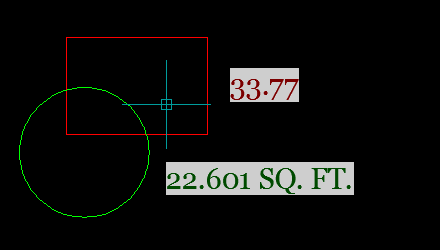

Match Field Formatting
This page is delivered for consistency purposes only, as part of the LeeMac sample module of DynALisp, which shows how DynALisp turns existing AutoLISP programs into a module. The program and its description are the work of Lee Mac, who keeps all the credit for them. The original page, with the latest version, is on Lee Mac's website: https://lee-mac.com/matchfieldformatting.html
| Function Syntax | LM-MatchFieldFormatting – original syntax: MFF (see aliases) |
| Current Version | 1.2 |
| Compatible with AutoCAD for Mac? | No |
| Compatible with AutoCAD LT? | Yes |
| Original Page | lee-mac.com/matchfieldformatting.html |
Program Description
This program enables the user to copy the formatting from a selected source field to multiple 'destination' fields in a drawing.
Upon issuing the command syntax MFF at the AutoCAD command-line, the user is prompted to select an annotation object (Text, MText, Attribute, Multileader, Dimension) containing a field expression with formatting applied. If the selected object contains more than one field expression, the first field expression containing field formatting will be used by the program.
The user may then apply the formatting extracted from the source field to multiple selected destination fields in the drawing.
The program is also compatible with nested fields and fields with no formatting applied. If a nested field has formatting applied, this formatting will be replaced by the formatting extracted from the source field expression; however, only primary fields which contain no formatting will have new formatting applied - this program is designed to not add field formatting to nested fields which did not previously contain formatting (for example, to ensure that no precision is lost for formula fields summing a set of object property fields).
Demonstration

Bundled program notes
;;--------------------=={ Match Field Formatting }==--------------------;;
;; ;;
;; This program enables the user to copy the formatting from a ;;
;; selected source field to multiple destination fields in a drawing. ;;
;; ;;
;; Upon issuing the command syntax 'mff' at the AutoCAD command-line, ;;
;; the user is prompted to select an annotation object (Text, MText, ;;
;; Attribute, Multileader, Dimension) containing a field expression ;;
;; with formatting applied. If the selected object contains more than ;;
;; one field, the first field expression containing formatting will ;;
;; be used. ;;
;; ;;
;; The user may then apply the formatting extracted from the source ;;
;; field to multiple selected destination fields in the drawing. ;;
;; ;;
;; The program is also compatible with nested fields and fields with ;;
;; no formatting applied. If a nested field has formatting applied, ;;
;; this formatting will be replaced by the formatting from the source ;;
;; field; however, only primary fields which contain no formatting ;;
;; will have new formatting applied - this program is designed not to ;;
;; add field formatting to nested fields which did not previously ;;
;; contain formatting. ;;
;; ;;
;;----------------------------------------------------------------------;;
;; Author: Lee Mac, Copyright © 2013 - www.lee-mac.com ;;
;;----------------------------------------------------------------------;;
;; Version 1.0 - 2013-07-12 ;;
;; ;;
;; - First release. ;;
;;----------------------------------------------------------------------;;
;; Version 1.1 - 2017-06-13 ;;
;; ;;
;; - Updated LM:fieldcode function to account for field expressions ;;
;; greater than 250 characters in length. ;;
;;----------------------------------------------------------------------;;
;; Version 1.2 - 2018-01-15 ;;
;; ;;
;; - Updated replaceformatting function to retain any text following ;;
;; the last field expression held by the selected annotation object. ;;
;;----------------------------------------------------------------------;;
Command Names And Aliases
As in every DynALisp module, each program of this sample module has one main command, named LM-*, and the original command names of Lee Mac's page are kept as its aliases: they run the same command, and can be added, renamed or removed in Dyl-Suite (saved in Resources\Aliases.csv).
| Command | Aliases | Name |
|---|---|---|
| LM-MatchFieldFormatting | MFF | Match Field Formatting |